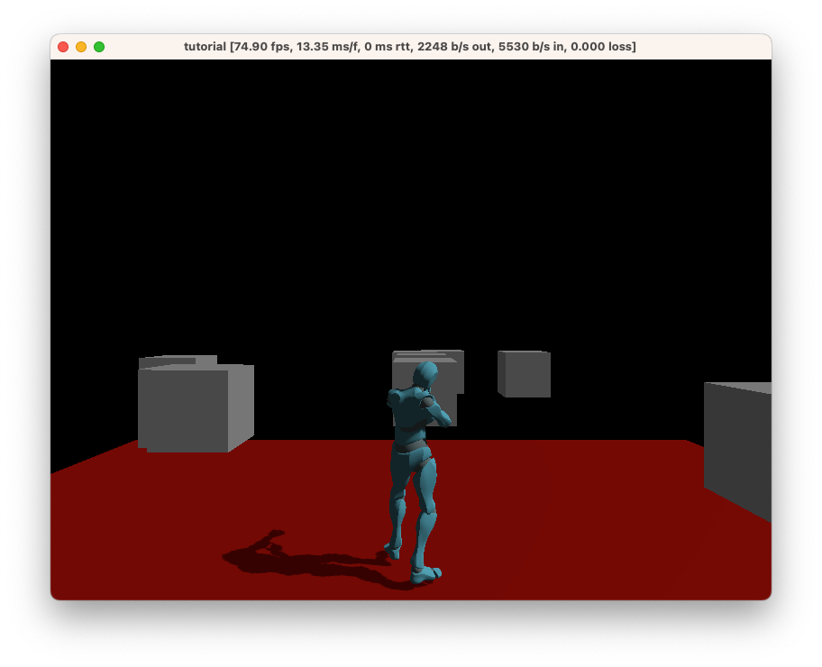

Chapter 3: Creating the scene
In this chapter, our goal is to create cube obstacles that the player has to walk around, and then we’ll rain bouncy balls down to add dynamism to the scene.
Adding some obstacles
Let’s add some basic obstacles to your game. Add the following code:
#![allow(unused)] fn main() { for _ in 0..30 { Entity::new() .with(cube(), ()) .with(cube_collider(), Vec3::ONE) .with( translation(), (random::<Vec2>() * 20.0 - 10.0).extend(1.), ) .spawn(); } }
This code will spawn 30 cubes with random positions. Try running it!
In-depth: A
cube_collideris one of the basic physics primitives. For more information, consult the reference documentation on physics, or try the physics example.
Challenge:
Entity::spawnwill return anEntityId. Try usingset_componentto set therotationof the cubes.
It should look something like this:

Creating a rain of bouncy balls
We can also spawn some interactive physics elements. Add the following to make it rain bouncy balls:
#![allow(unused)] fn main() { fixed_rate_tick(Duration::from_secs_f32(0.5), |_| { Entity::new() .with_merge(Sphere::suggested()) .with_merge(Transformable::suggested()) .with(scale(), Vec3::ONE * 0.2) .with( translation(), Vec3::X * 10. + (random::<Vec2>() * 2.0 - 1.0).extend(10.), ) .with(sphere_collider(), 0.5) .with(dynamic(), true) .spawn(); }); }
This code will spawn a bouncy ball at a semi-random position each frame, where Sphere and Transformable are concepts that provide the components required for a sphere that can be moved around.
In-depth: Here, we’re using a
Framemessage, which is sent by the runtime each frame. Learn more about messages in the reference documentation.
Try running this. You should see a rain of bouncy balls now!

However, there’s quite a big problem: the bouncy balls never expire, so the world keeps filling up. Let’s fix that.
To begin with, we’re going to add this to the ambient.toml:
[components]
bouncy_created = { type = "Duration" }
In-depth: Here, we’re defining a custom component. For more information on how component definitions work, as well as what they’re capable of, check out the reference documentation.
Next, we’re going to add the component to the bouncy balls. The with line needs to be placed before the spawn function, like so:
.with(sphere_collider(), 0.5)
.with(dynamic(), true)
+ .with(bouncy_created(), game_time())
.spawn();
In-depth: Components are added in the order that you specify them, so it’s possible to override an earlier component with a later one. In this case, it doesn’t matter where you place the
bouncy_createdcomponent as long as it’s prior to the entity being spawned.
Finally, add this code at the end of your main function:
#![allow(unused)] fn main() { query(bouncy_created()).each_frame(|entities| { for (id, created) in entities { if (game_time() - created).as_secs_f32() > 5.0 { entity::despawn(id); } } }); }
In-depth: Here, we see a query which runs every frame. It grabs all entities with the
bouncy_createdcomponent and removes all components that are older than 5 seconds.
Note: Ambient offers a
remove_at_game_timecomponent that will do this for you, but we’re using this as an example of how to write a component definition and query. As an example of how you would useremove_at_game_time, you can replace the above code with the following:.with(sphere_collider(), 0.5) .with(dynamic(), true) + .with(remove_at_game_time(), game_time() + Duration::from_secs(5)) .spawn();
Source: The complete code for this chapter can be found here.